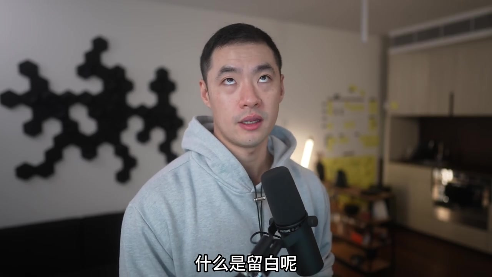
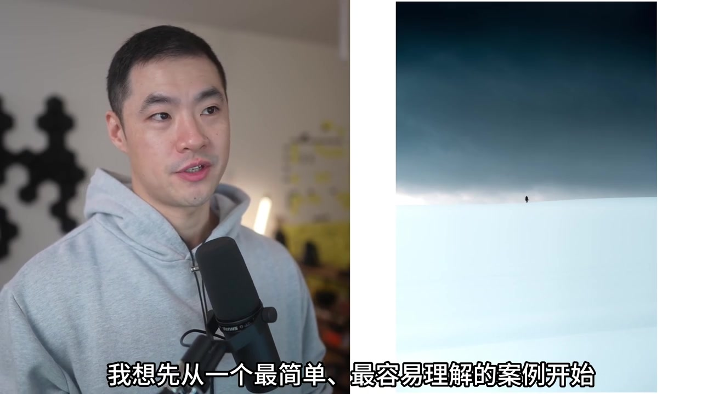
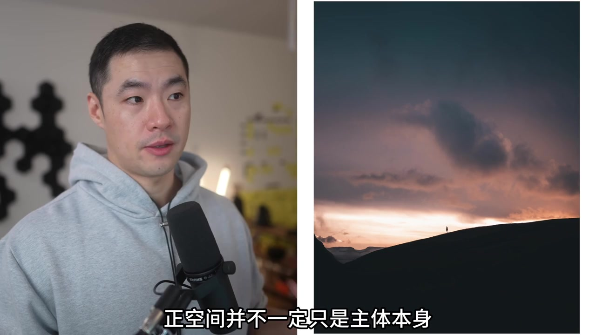
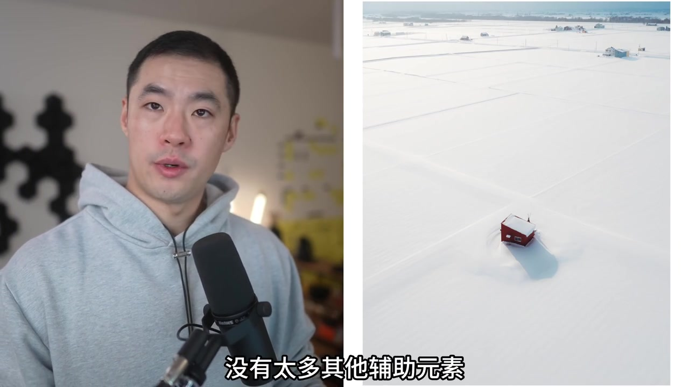
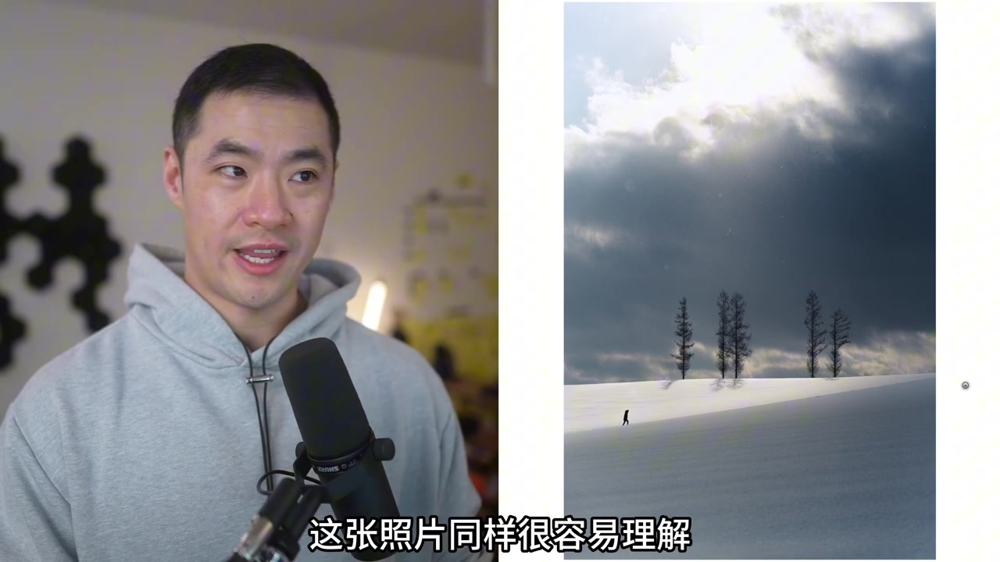
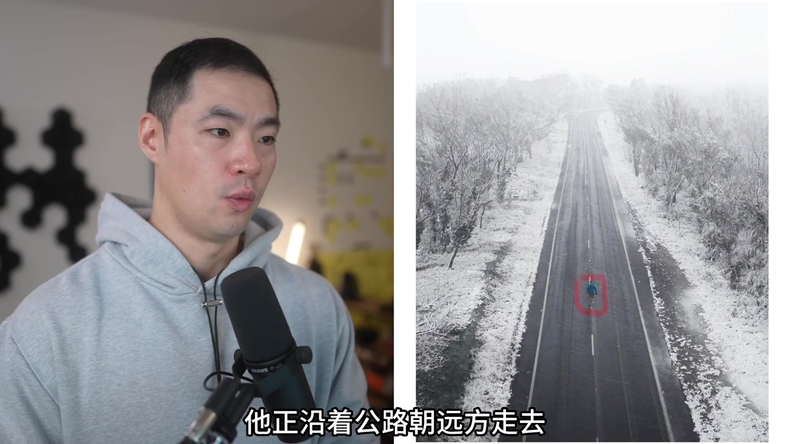
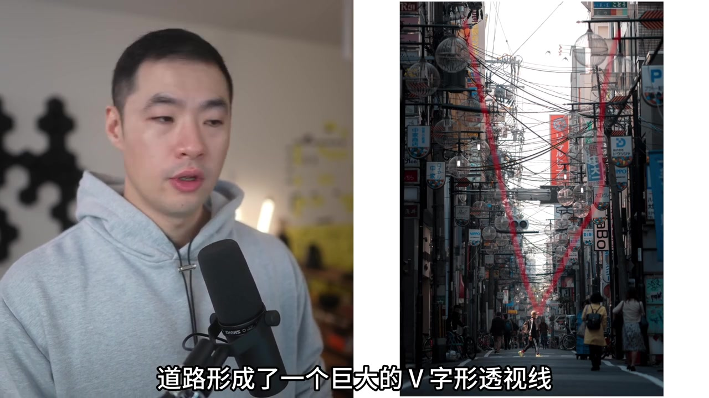
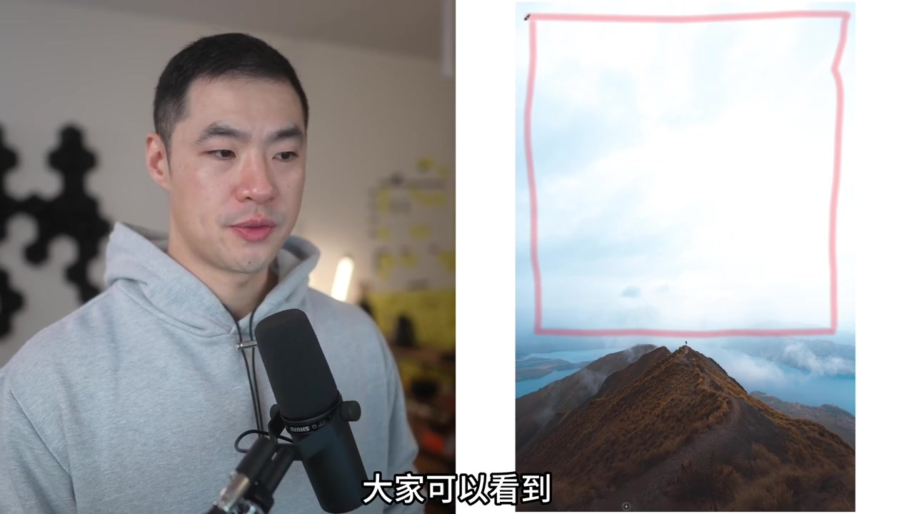

先回扣上一集，再宣布最喜欢的视觉模式
视频以“亲爱的摄影爱好者们”开场，说明这是视觉语言系列第二集。讲述者提醒：视觉语言与视觉模式应被当作表达工具，而不是死记的规则；需要复盘的人可以先看上一期。
随后他直接点题：今天要讲的是自己最有共鸣、也最爱用的视觉模式——留白。标题写作“负空间”，口播里则主要说“留白”，二者在本集被当作同一主题展开。

留白 = 刻意保留空白，并与正空间对照
定义被说得很清楚：留白是为了与画面中的充实空间形成对比，有意识地保留大量空白。于是出现一对概念——空白空间与充实空间；它们相互配合、相互衬托。
充实空间通常是主体，但也可以包含辅助元素，用来引导视线、建立视觉重点。它更常见的名字叫正空间。空白空间则几乎是画面里除正空间之外的全部区域，也就是本集标题里的负空间。
原声大意：负空间之所以刻意“什么都没有”，不是因为它没价值；恰恰因为它的存在，正空间才有足够的呼吸空间，主体才能更充分地表达。
转录说明：Whisper 多次把“负空间”听成“复空间”，把个别词听成“强跨”“刘白”等。上文按视频标题与可见字幕校正；页面末尾转录区保留原始分段。
为什么特别强调留白：它是视觉层级的基石
讲完定义后，讲述者回答“为什么总强调它”：留白是整个视觉层级的基石。视觉层级决定什么最重要、第一眼看什么、第二眼看什么，以及哪些元素相对次要。
除此之外，留白还能表现广阔感、主体孤立感，并暗示运动方向。理论到此收束，接下来进入案例。
三个基础案例：注意力、辽阔感与尺度对比
案例一最直观：中央有一个很小的主体，上下大片空白。正空间面积不大，负空间却占满其余区域。效果是注意力不被干扰，照片信息极少、极易读懂；同时巨大开放空间营造辽阔感，让观众意识到人物所处原野的规模。

案例二把正空间扩宽：它不只是人物，还包括人物周围最亮的那片区域；前景近黑与上方较暗部分构成负空间。明暗对比让内容立刻可读，同时也强化辽阔与孤立感。

案例三把主体放在下三分之一，天空与环境占大部分画面，强调土地有多宽、小屋有多渺小。尺度对比让广阔感更明显。

这里他插入一个关键提醒：留白能营造辽阔感，但留白与元素在画面中的位置是两种不同的视觉模式，可以结合，却不是同一件事。小屋再往下移，未必更有冲击力——有效构图取决于你想表达什么。
留白也能讲故事：前方还有多远、已经走了多远
下一组案例转向运动暗示。一张雪地剪影照里，正空间是被阳光照亮的小块区域；真正重点不是光影本身，而是前方大片负空间让观众感到“人物还有很长一段路要走”。讲述者说自己拍过人物居中、靠边缘等多个版本，最后选中这一张，因为它最能表达未完成的旅程。

朋友 Ray 沿公路远去的例子把同一逻辑说得更明白：朝前走时，前方留白像未来的路程；若转身走回来，同一片空白会变成“已经走了多远”。留白既能暗示未来，也能暗示过去，关键在于人物朝向与空白的关系。

随后一张明暗对比强的双人画面再次证明：所有亮部可共同构成正空间，黑色区域退为负空间；前方空无一物的区域则清楚标出前进方向。讲述者把这类留白称作“视觉隐喻”，建议用来让照片开始讲故事，而不是只记录瞬间。
引导线压暗两侧，以及后期把天空提成纯白
街景案例里，道路形成巨大的 V 字形透视线，把视线送到远去的人物。与此同时，左右两侧被刻意压暗，好让这些区域成为负空间、不再抢注意力。留白既可以在拍摄时靠构图创造，也能在后期继续强化。

最后一个案例拍自新西兰 Roy's Peak。讲述者认为上方天空信息不多，真正有趣的是山脊线条与山顶人物，于是后期大幅提高高光，把天空做成纯白负空间，逼迫观众看下方主体。视觉层级因此更清晰，构图也更易读。

练习建议：看起来简单，真正掌握并不容易
案例分析结束后，讲述者坦言留白难掌握：看起来只是留出空白，用好却要反复实验。他建议不断尝试不同留白比例，思考什么属于正空间、哪些辅助视觉模式可以并入正空间，以及多留/少留如何改变布局。
原声收尾：“走出去创作一些真正有意义的作品。”
下一期会继续视觉语言系列，介绍另一种视觉模式。在此之前，他希望观众多拍、多练、多尝试。